This documentation is updated from that in the book entitled Essentials of Paleomagnetism by Tauxe et al., (2010). This cookbook was designed as a companion website to the book Essentials of Paleomagnetism, 5th Web Edition. Chapter references to this companion book are, for example, “Essentials Chapter 1”.
There are many chefs who contributed to this work, in particular, the MagIC Database Team (Cathy Constable, Anthony Koppers, Rupert Minnett, Nick Jarboe, Ron Shaar, and Lori Jonestrask). Nick Swanson-Hysell (UC Berkeley) contributed the demag_gui and Jupyter notebook documentation. The PmagPy project is supported by grants from the National Science Foundation.
Users of PmagPy should cite the open access article:
If you want the full PmagPy functionality, you have two options:
If you do not need the full PmagPy functionality, and you only want to use Pmag GUI, MagIC GUI, Thellier GUI, and Demag GUI, there is now a standalone download for you. You won’t need to install Python for this.
You will find the latest OS X standalone download here: https://github.com/PmagPy/PmagPy-Standalone-OSX/releases/latest
You will find the latest Windows standalone download here: https://github.com/PmagPy/PmagPy-Standalone-Windows/releases/latest
This binary has only been tested on a Ubuntu 14.04 (Trusty) distribution and might be buggy on other distributions.
You will find the latest Linux standalone download: https://github.com/PmagPy/PmagPy-Standalone-Linux/releases/latest
If you have previously downloaded Canopy Python, you will need to uninstall it following these directions.
Next, choose whether you want a developer install or a default (pip) install. If you want to get into the nitty-gritty of the code, you should do a developer install. However, the developer install may be buggier. If you just want to use PmagPy out of the box, do a regular pip install. *Note*: you cannot have both a developer install and a pip install. If you want to do a developer install, make sure you uninstall pmagpy/pmagpy-cli first if you have already installed them.
Next, choose install instructions based on your preferred install method (pip/developer) and your operating system (OSX/Windows/Linux).
Check out our guidelines on how to contribute to PmagPy for information on how to raise issues, request features, and make pull requests.
Here are the details of what the developer install script actually does. For OS X and Linux, it adds these lines editing $PATH to your .bashrc file:
And this line to your $PYTHONPATH to your .bashrc file:
where *** is your username. (Of course, these lines will depend on exactly where you have put your PmagPy folder – if it lives on your home directory, your $PATH will point there:
For Windows, the same variables are set but in your Control Panel (Environment Variables). To do this yourself, you would first add to your existing PATH variable or create a new PATH variable with the following values:
and
Next, add to your existing PYTHONPATH variable or create a new PYTHONPATH variable with
(Press control-D to exit)
If you have Python 2.7 or a non-Anaconda Python, you will need to go back and install Anaconda Python. If you installed Canopy Python at any point, make sure you uninstall it first.
For more help, see the troubleshooting section.
We try to support all platforms, but there are some quirks that will affect how you invoke PmagPy programs depending on your platform. For OSX users with a pip install, you will invoke the GUIs with a special syntax:
For all platforms with a developer install:
For Windows users with a pip install:
If you see an error message like this:
you need to use “pmag_gui_anaconda”
If you see an error message like this:
You are either using the wrong command for your operating system, or you haven’t fully installed PmagPy.
Once you have installed PmagPy, you may want to run the example notebooks. You can copy example data_files and launch the PmagPy notebooks from your command line with the following:
The final command (jupyter notebook) will open a browser window, and you can then click on the notebook you want to run (we recommend you start with PmagPy.ipynb).
**Note**: You only have to do the move_data_files.py command once after initial installion and then once after each update. You should make a copy of any notebook (see File menu) if you want to make any changes as each update will overwrite the standard notebooks.
Where do you want to go from here?
Some of the key programs for importing and interpreting paleomagnetic and rock magnetic data are packaged together in a program called Pmag GUI.
Here is a list of what PmagPy can do.
Calculations:
Plots:
Maps:
Working with MagIC:
Other handy scripts:
Much more information is available on each PmagPy program. To learn how to use PmagPy in a Python environment (i.e., a Juypyter notebook, the Python interpreter, or your own Python script), you have two options.
You can run an interactive PmagPy demo here. Please be patient – it will take a few minutes to initialize.
You can view a static PmagPy page here. The data files used in the examples are located in the data_files directory bundled with the PmagPy software distribution. If you need help finding the data_files, see the install instructions.
Both the interactive demo and the static page contain a comprehensive introduction to PmagPy.
You can also see the source code online at:
https://github.com/PmagPy/PmagPy
PmagPy can also be used on the command line.
Here is a brief introduction to how the PmagPy command-line programs work. All PmagPy programs print a help message out if you type: “program_name.py -h” on the command line. Many have an “interactive” option triggered by typing program_name.py -i. Many also allow reading from standard input and output. The help message will explain how each particular program functions. There are some common features for the command line options:
Depending on your operating system, you may need to use a different command to invoke a command line program. See this section for details.
You can see examples for each program on the PmagPy-cli page. The data files used in the examples are located in the data_files directory bundled with the PmagPy software distribution. If you need help finding the data_files, see the install instructions.
You can also see the source code online at:
https://github.com/PmagPy/PmagPy
Note: Pmag GUI is available for use with both 3.0 and 2.5 data. All new contributions should be built up using 3.0, but 2.5 may be used for legacy data sets and then later upgraded using the MagIC site. You may specify which data model you want to use on the command-line using the switch “-DM”, or in the window that pops up when you first open Pmag GUI.

and put ThisProject there.
on the command line for help). In the PmagPy-data/data_files folder you will find a subfolder named Pmag_GUI. Copy the contents of the ThisProject directory into your own Project Directory folder.
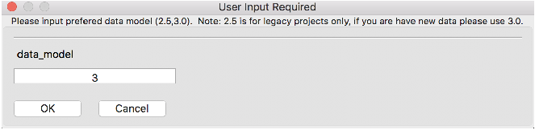
To learn what all the column headers mean look at the documentation for generic_magic.py.

Your dialog boxes should look like this for the AF and thermal data:

and like this for the paleointensity data. For paleointensity data, you must also supply the lab field in micro tesla (40) and orientation relative to sample’s X direction: 0 -90.
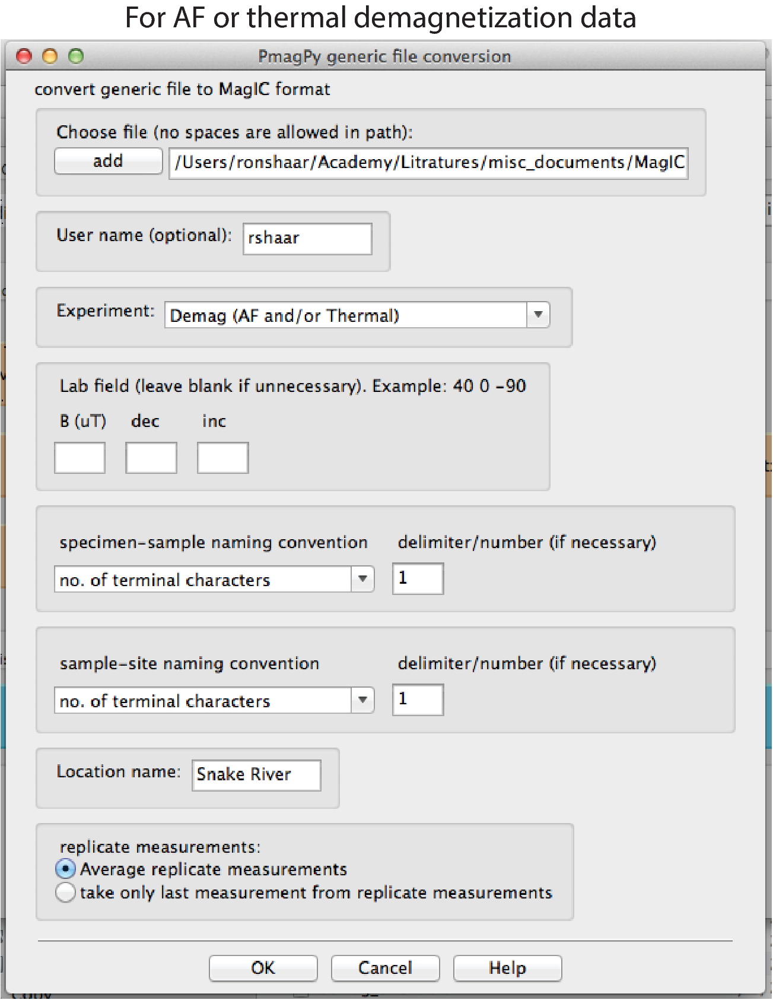

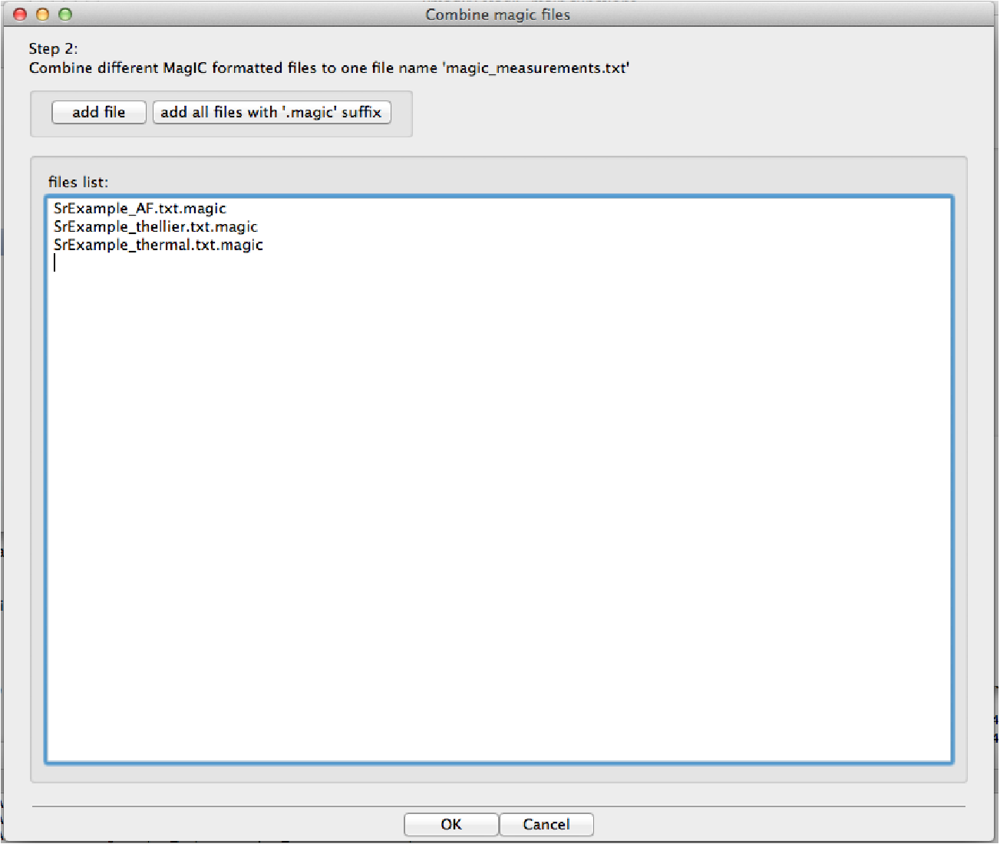

Filling in metadata is a critical part of building a MagIC Project Directory. The data relevant to this example are arranged in five tables: specimens, samples, sites, locations, ages. To complete the data, click the button, and follow the directions in the help window in order:

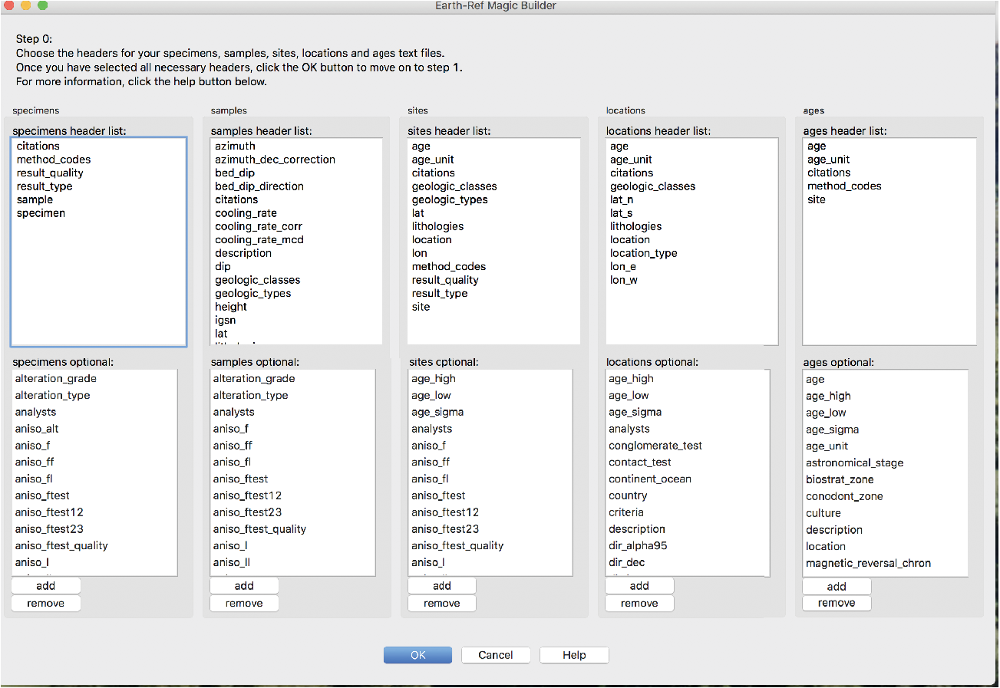


Next, click the [Demag GUI] button. This is the main panel of the demag GUI:
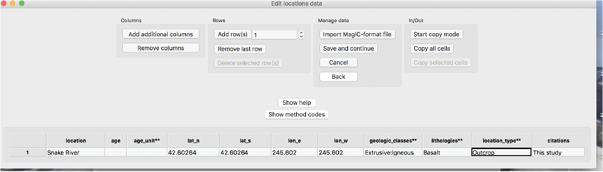
Use of the Demag GUI is described in more detail in the Demag GUI section below. Here are a few instructions that can be used as a quick start for using Demag GUI. Note: If at any point you require help with a particular aspect of Demag GUI clicking on [Help] → [Usage and Tips] (hotkey: ctrl-h) then clicking on the item you wish to know more about will provide a pop-up box with information for most all aspects of the GUI and Interpretation Editor, see additional help for details.
Before you start your analysis, you can choose your coordinate system. From the ‘coordinate system’ drop-down menu you can choose the coordinate system in which you wish to view the data (e.g. ‘geographic’). The coordinate system and the orientation of the projection can be switched throughout your analysis which updates the view of the data within the Zijderveld vector component plot and the equal area directional projections.
To analyze the data in the example, follow these steps for each specimen:
To calculate Fisher mean for the site: choose from the ‘mean options’ drop-down menus. First select: component=All, then select: mean=Fisher.
All of the fits can be viewed and modified using the Interpretation Editor which can be selected from the Tools menu in the top menubar. (hotkey: ctrl-e)
To permanently save all of the specimen interpretations, choose from the menubar [File] → [Save MagIC tables]. This saves all the interpretations in specimen/sample/site tables in your ThisProject directory. Fits that are saved this way will be loaded into demag_gui the next time it is launched. Click through the dialog boxes and fill out choices for generating MagIC results.
If you are partway through your analysis, you may want to save your place without outputting to MagIC tables. To save temporary analysis data use [File] → [Save interpretations to a redo file]. This saves all interpretation data to a redo file which will not load immediately when the GUI starts, but preserves aesthetic aspects of interpretations such as color as well as the specimen you were on when you saved to keep your place in analysis and allows rebooting of session without full export of MagIC tables.
Close the Demag GUI.
Next, click the [Thellier GUI] button. This is the main panel of the thellier GUI:
This image shows the main panel of Thellier GUI:

Use of the Thellier GUI is described in more detail in the Thellier GUI section below and in this PDF document: Thellier GUI manual. Here are a few instructions that can be used as a quick start for using Thellier GUI.
You can customize which selection criteria you need under Preferences => Specimen paleointensity statistics (from SPD list). This uses the Paterson et al. (2014) definitions of paleointensity statistices. Next, select bounds for the statistics under [Analysis] =>[Acceptance criteria] => [Change acceptance criteria].
The default of the program is to calculate sample means. To change it to site level mean, choose from the menubar: [Analysis] → [Acceptance criteria] → [Change acceptance criteria]. Find the ‘average by sample/site’ dropdown menu in the third row and change it to [site]. Click OK. The site mean will appear in the sample/site results box (top right).
Then, to analyze the data, follow these steps for each specimen:
Next, you will save these interpretations to a file. To do so, choose from the menubar [File] → [Save MagIC pmag tables]. This save all the interpretations in the specimens.txt file in your MagIC Project Directory. Close the Thellier GUI.
To create a MagIC-format file for upload, you first click on the green Create MagIC txt file for upload button on the main page of Pmag GUI. A file will be created in your ThisProject directory. Now, go to the MagIC interface. Click on the ‘Upload Tool’ button and upload your file by draging and droping the upload file onto the ‘Drop and drop files here to upload’ window. Congratulations. Your data are now in the database under a Private Contribution. But, they are not yet activated and cannot be until they are at least accepted for publication. After you have a suitable reference, you can Activate your contribution. Once you activate an uploaded dataset (only for published papers), it will be publicly available.
Data can be downloaded from the MagIC database and examined with PmagPy tools. The MagIC search interface provides a rich variety of search filters available by clicking on the ‘Filter the MagIC Search Results’ text box. To locate data from a particular reference, simply substitute the digital object identifier (DOI) in your browser window:
http://earthref.org/MAGIC/doi/10.1029/2003GC000661
The above DOI will find the data for the paper by Tauxe et al. (2004). [This may fail in Safari; if so, use an alternative browser like Firefox or Chrome.] To download the data, simply click on the file icon labeled “Download”. This will save a file to your downloads folder. To unpack this file after downloading it from the database, open Pmag GUI and click “unpack downloaded txt file“.
There is an astounding number of different ways that paleomagnetists document data in the field and in the lab. This variety is met with a large number of method codes that describe sampling and orientation procedures (see https://earthref.org/MagIC/method-codes for a complete description). The MagIC database expects sample orientations to be the azimuth and plunge of the fiducial arrow used for measurement (see [Essentials, Chapter 9] ) and the orientation of the bedding to be dip direction and downward dip so no matter what your own preference is, it must be translated into the standard MagIC convention for use with the PmagPy programs and with Pmag GUI.
Pmag GUI supports two different ways of getting orientation and other sampling related information into a MagIC usable format. The first way is through step 2 on the GUI front panel and filling in the data from within the GUI. That way will work for many applications, but it may be desirable to fill the spreadsheet in separately from the GUI by using a tab delimited file (orient.txt format). By clicking on step 2 on the GUI front panel you create a file named demag_orient.txt which has all of your sample names in it. Each orient.txt file should have all the information for a single location sensu MagIC.

The next row has the names of the columns. The required columns are: sample_name, mag_azimuth, field_dip, date, lat, long, sample_lithology, sample_type, sample_class) but there are a number of other possible columns (e.g., Optional Fields in orient.txt formatted files are: [date, shadow_angle, hhmm], date, stratigraphic_height, [bedding_dip_direction, bedding_dip], [image_name, image_look, image_photographer], participants, method_codes, site_name, and site_description, GPS_Az]). Column names in brackets must be supplied together and the data for stratigraphic_height are in meters. Also note that if these are unoriented samples, just set mag_azimuth and field_dip to 0.
It is handy to document the lithology, type and material classification information required by MagIC. These are all controlled vocabularies listed at http://earthref.org/MAGIC/shortlists.htm. For archaeological materials, set the lithology to “Not Specified”.
Put in stratigraphic height, sun compass, differential GPS orientation information under the appropriate column headings. You can also flag a particular sample orientation as suspect, by having a column ’sample_flag’ and setting it to either ’g’ for good or ’b’ for bad. Other options include documenting digital field photograph names and who was involved with the sampling.
For Sun Compass measurements, supply the shadow_angle, date and time. The date must be in mm/dd/yy format. If you enter the time in local time, be sure you know the offset to Universal Time as you will have to supply that when you import the file. Also, only put data from one time zone in a single file. The shadow angle should follow the convention shown in this figure (from Tauxe et al., 2010):

Supported sample orientation schemes:
There are options for different orientation conventions (drill direction with the Pomeroy orientation device [drill azimuth and hade] is the default), different naming conventions and a choice of whether to automatically calculate the IGRF value for magnetic declination correction, supply your own or ignore the correction. The program generates or updates samples.txt and sites.txt files.
All images, for example outcrop photos are supplied as a separate zip file. image_name is the name of the picture you will import, image_look is the “look direction“ and image_photographer is the person who took the picture. This information will be put in a file named images.txt and will ultimately be read into the images table.
Often, paleomagnetists note when a sample orientation is suspect in the field. To indicate that a particular sample may have an uncertainty in its orientation that is greater than about 5∘, enter SO-GT5 in the method_codes column and any other special codes pertaining to a particular sample from the method codes table. Other general method codes can be entered later. Note that unlike date and sample_class, the method codes entered in orient.txt pertain only to the sample on the same line.
Samples are oriented in the field with a “field arrow“ and measured in the laboratory with a “lab arrow“. The lab arrow is the positive X direction of the right handed coordinate system of the specimen measurements. The lab and field arrows may not be the same. In the MagIC database, we require the orientation (azimuth and plunge) of the X direction of the measurements (lab arrow). Here are some popular conventions that convert the field arrow azimuth (mag_azimuth in the orient.txt file) and dip (field_dip in orient.txt) to the azimuth and plunge of the laboratory arrow (sample_azimuth and sample_dip in samples.txt). The two angles, mag_azimuth and field_dip are explained below.
[1] Standard Pomeroy convention of azimuth and hade (degrees from vertical down) of the drill direction (field arrow). sample_azimuth = mag_azimuth; sample_dip =-field_dip.

2] Field arrow is the strike of the plane orthogonal to the drill direction, Field dip is the hade of the drill direction. Lab arrow azimuth = mag_azimuth-90∘; Lab arrow dip = -field_dip

[3] Lab arrow is the same as the drill direction; hade was measured in the field. Lab arrow azimuth = mag_azimuth; Lab arrow dip = 90∘-field_dip.

[4] Lab arrow orientation same as mag_azimuth and field_dip.

[5] Lab arrow azimuth is mag_azimuth and lab arrow dip is the field_dip-90∘

[6] Lab arrow azimuth is mag_azimuth-90∘, Lab arrow dip is 90∘-field_dip, i.e., the field arrow was strike and dip of orthogonal face:

Structural correction conventions:
Because of the ambiguity of strike and dip, the MagIC database uses the dip direction and dip where dip is positive from 0 → 180. Dips>90 are overturned beds.
Supported sample naming schemes:
When you are finished with editing the orient.txt file, return to step 2 on the GUI front panel.
The MagIC database is designed to accept data from a wide variety of paleomagnetic and rock magnetic experiments. Because of this the magic_measurements table is complicated. Each measurement only makes sense in the context of what happened to the specimen before measurement and under what conditions the measurement was made (temperature, frequency, applied field, specimen orientation, etc). Also, there are many different kinds of instruments in common use, including rock magnetometers, susceptibility meters, Curie balances, vibrating sample and alternating gradient force magnetometers, and so on. We have made an effort to write translation programs for the most popular instrument and file formats and continue to add new supported formats as the opportunity arises. Here we describe the various supported data types and tell you how to prepare your files for importing. In general, all files for importing should be placed in the MyFiles directory or in subdirectories therein as needed. If you don’t see your data type in this list, please send an example file and a request to: ltauxe@ucsd.edu and we’ll get it in there for you.
The supported file formats are:
Rock Magnetometer Files:
Anisotropy of Magnetic Susceptibility files:
Pmag GUI will import hysteresis data from room temperature Micromag alternating gradient magnetometers (AGM) in several different ways. You can import either hysteresis loops or backfield curves, or you can import whole directories of the same. In the latter case, the file endings must be either .agm (.AGM) or .irm (.IRM) and the first part of the file must be the specimen name. See the documentation for agm_magic for examples.
Now you’ve collected together all the files you need, we can start importing them into MagIC directory with Step 1 in Pmag GUI.
Start up MagIC GUI. You’ll do this by clicking on the icon (if you downloaded the standalone version) or entering ‘magic_gui.py’ on your command line (if you downloaded the full PmagPy installation). If you are using Anaconda Python, you will type ‘magic_gui_anaconda’ on your command line instead.
When you first start magic_gui.py, you will change directories into a ‘Project Directory’. For each study, create a directory with a name that relates to that study. Here we will call it MyProject. This is where you will collect and process all the rock and paleomagnetic data for a given study, usually a publication. The project directory name should have NO SPACES and be placed on the hard drive in a place that has NO spaces in the path. Under certain Windows versions, this means you should not use your home directory, but create a directory called for example: D:\MyPmagProjects and put MyProject there.

Now we’ll walk through a simple data input process, with fake data.


All other required data will fill in automatically. If you don’t provide latitude and longitude data for a sample, it will propagate down from the site after you save and close the grid.


Open the result grid to fix the error. Click ‘Show help’ for more information about validations. In this case, it is a simple fix: add method code ‘LP-PI’ to the average V[A]DM result.
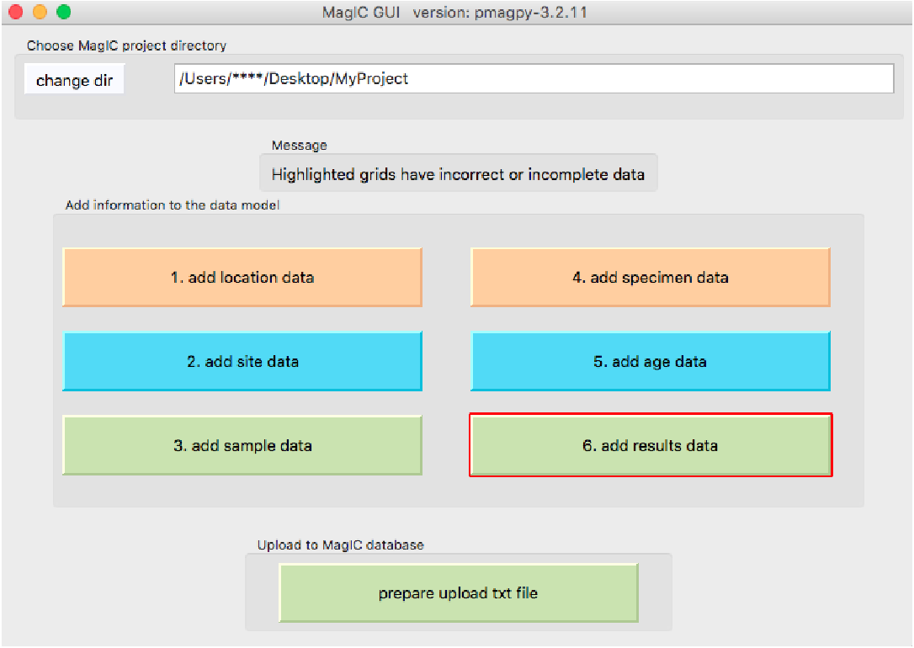
The Demag GUI (demag_gui.py) program enables the display and analysis of paleomagnetic demagnetization data. The software will display specimen level data within the chosen directory as a Zijderveld plot, equal area plot and intensity plot. Interpretations can be made to the data as least-squares line or plane fits. Mean directions can be calculated and displayed for these interpretations. These interpretations can be exported as MagIC tables.
The best way to launch the Demag GUI application is through Pmag GUI. If you have installed PmagPy using pip, (or completed a developer install), you can run ‘pmag_gui.py’ at the command line to launch it. Anaconda users will instead use ‘pmag_gui_anaconda’.
To use Demag GUI, you must have a MagIC format measurements file. You can convert other lab formats to MagIC format within Pmag GUI. Click through step 1 in Pmag GUI to import all of your files and then combine them into a ‘measurements.txt’ file (and possibly specimen, sample, site, and location files as well). Once you have converted all of your files, click on the Demag GUI button in Pmag GUI.
If you want to launch Demag GUI directly, (assuming PmagPy was properly installed using pip or developer install), you can simply type ‘demag_gui.py’ at the command line. Anaconda users will type ‘demag_gui_anaconda’ instead.

Demag GUI can also be launched through the command line by navigating to
the directory containing demag_gui.py and running it with:
To add a new fit, click the ‘add fit’ button (hotkey: ctrl-n). If no fit has yet been created for the current specimen, you add a new fit by double clicking on two measurements in the list of measurements to the left, or by double clicking on the data points on the zijderveld plot. You can manage multiple fits for the same specimen, switching between them using the drop-down-menu under the add fit button. Once you have selected a fit, the shape of the end points of the selected fit will turn to diamond shapes on all plots to distinguish them from the other data points. It is also possible to add interpretations in mass using the interpretation editor tool described below.
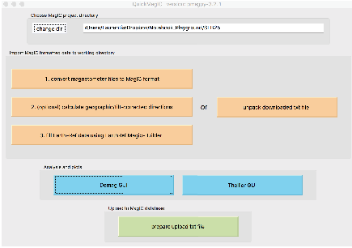
Once the desired fit is selected, its bounds can be edited using the drop-down
boxes under the bounds header.

Another way to edit bounds is to double-click the list of measurement
steps in the list on the left. The included steps in the currently selected
interpretation are shown in highlighted in blue on the measurement list and
the measurements marked “bad” are shown in highlighted in red. In
the case of duplicate measurements, the first good measurement with
the same treatment is used as a bound. All points between the selected
bounds that are flagged good (i.e. not flagged bad and marked in red),
including duplicate measurements, will be included in the interpreted
fit.
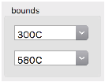
Finally, you can select the bounds of an interpretation directly off the Zijderveld
plot by hovering your mouse over a measurement (should change to a hand
shape) and double clicking.
When first created, the fit will be given a generic name such as Fit 1. The name
of the fit can be changed from the default by typing into the drop-down box
containing fit name. The default fit type is a least-squares line. You can choose
different fits, such as a line anchored to the origin or a plane, by using the
drop-down menu under the label ‘interpretation type’. Plane fits can be plotted
as either poles, full planes, partial planes, best fit vectors, or best fit vectors and
full plane (Note: plane poles will be displayed as squares and best fit vectors
will display as sideways triangles on high level mean plot). This display
option can be changed in the second drop-down menu under interpretation
type.

The properties of the currently selected fit to the data can be seen in the
upper center of the GUI in a box labeled ‘Interpretation Directions and
Statistics’.
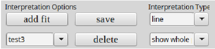
If you would like to delete a single interpretation, select the one you wish to
delete from the interpretation drop-down menu and click ‘delete’. If you wish to
clear all interpretations you may go into the interpretation editor located under
the tools menu, select the fits you wish to delete and click the “delete selected”
button.
You can switch current specimen by clicking the next or previous button under the specimen box in the side bar (hotkey: ctrl-right and ctrl-left respectively). You can also select specimen from the drop-down menu or type the name of the specimen directly into the specimen box and hit enter to go directly to that specimen. Finally, you can double click on any of the points on the higher level means plot to switch directly to that specimen and interpretation.
The choice between coordinate systems (i.e. specimen, geographic or tilt-corrected) is available on the left above the list of measurements. The data list and the plots will update to reflect the chosen coordinate system.
You can alter the X axis of the Zijderveld plot using the Zijderveld Plot Options box to set X=North, East, or NRM dec (found above the list of measurements).
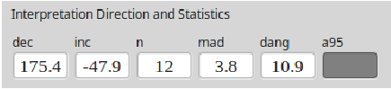
Due to flux jumps or other such errors, individual measurements should sometimes be excluded from interpretation. Such measurements can be flagged as “bad” by right clicking them within the measurement list and the measurement will then be highlighted in red. Additionally, you can double right click on the point you want to make bad in the Zijderveld plot to toggle it bad. The measurement_flag in the magic_measurements file will be change from “g” to “b” when a measurement is marked as bad the step will not be included in fits that are made to the data. Any measurement marked as bad will be colored red in the step list and will be shown as an empty rather than filled circle on the Zijderveld, equal area and M/M_0 plots. To change a bad measurement back to being good, one can right click on it again. Upon doing so, the red highlighting will go away, the data will be shown colored in within the plots and any fit that spans that data point will be recalculated to include it.
Acceptance criteria can be set by using the menu option [Analysis] → [Acceptance Criteria] → [Change Acceptance Criteria]. These criteria will be written to a criteria.txt table. These criteria can then be used to exclude interpretations that fail checks against this criteria during export.
The four plots that take up the majority of the center of the GUI are where data and their interpretations are displayed. All plots are initially set to zoom mode and this is signified by a cross shaped cursor when you mouse over them. To zoom simply click and drag the rectangle to the desired area. You can switch to pan mode by right clicking on any one of the graphs and then clicking and dragging will pan around the plot. Finally, to return to the original plot zoom level and position simply click the middle mouse button to return home. Note: In the absence of a middle mouse button pressing both right and left mouse buttons at the same time works on most laptops. In the case of Mac laptops, clicking with two fingers may work. If it doesn’t, you will need to switch to a different specimen or change the interpretation bounds to cause the figure to reload.
On the Zijderveld plot you have the additional option to select the current interpretation’s bounds by double clicking on a measurement point. You can also double right click on a measurement point in the zijderveld plot to mark it bad (this second option may not work on all systems).
On the equal area plots, both for the specimen and high level means, you can double click on any interpretation to switch to that specimen and interpretation immediately.
Once you have picked out your interpretations, you can save the session data in two different ways: (1) as a .redo file which will allow you to have the fits preserved to be view again with Demag GUI or (2) as MagIC tables (at the specimen/sample/site levels) to be uploaded to the MagIC database or otherwise processed. In addition, you may save image files of the plots.
The .redo File: You can use the menu option [File] → [Save current interpretations to a redo file] to create this file type, you can just click the save button next to add fit, or you can use the hotkey ctrl-s. The advantage of the .redo file type being that it is designed to save your place when analysing a large dataset. Loading a redo file will reload all interpretations previously created any special colors assigned to them and take you to the specimen you saved the redo file on allowing you to pick up where you left off. Note: This file type does NOT load previous interpretations on start up you must go to the menu option [File] → [Import previous interpretations from a redo file] (hotkey: ctrl-r) to restore your previous session.
The MagIC Tables: By going to the menu [File] → [Save MagIC Tables] you can export your interpretations made in Demag GUI to the MagIC tables which can then be used by other MagIC programs or uploaded to the MagIC database. You can export any or all of the three coordinate systems upon selecting this option and you may choose to save samples and sites tables in addition to the specimens table that is output. If you choose to output additional information you will be prompted by a pop up window for additional information. Note: This save format loads on start up of the GUI immediately restoring your interpretations. Selection of this option will overwrite your demag_gui.redo file in the working directory.
Images of Plots: Select the menu option [File] → [Save plot] → [Save all plots] to save all plots, or you can save any of the plots individually. If you zoom or pan any of the plots the shifted image will be saved, not the originally plotted image (although the plot will redraw and reset to the original image in the GUI).
You can flag the current specimen interpretation (marked by large diamonds on all plots) good or bad by using the menu option [Analysis] → [Flag Interpretations]. The list of interpretations in the interpretation editor tool of Demag GUI can also be used to toggle interpretations good or bad in the same way that measurements can be marked good or bad in the measurement list, by right clicking on the entry you want toggled. This will change the shape of the interpretation to a small diamond on all plots, remove it from use in any higher level means, and mark the entry result_quality ‘b’ instead of ‘g’ to signify this.
You can check sample orientation by using the menu option [Analysis] → [Sample Orientation] → [Check Sample Orientations] (hotkey: ctrl-o). This function will set your mean options to fisher of all components at the current site level and display the wrong arrow (up triangle), wrong compass (down triangle), and rotated sample for declanation incraments of 5 degrees (dotted circle). This allows you to check if the sample orientation is correct and thus can be used in analysis. If you determine the current sample orientation to be bad you can mark it as such using the menu option [Analysis] → [Sample Orientation] → [Mark Sample Bad] (hotkey: ctrl-.). This will change the sample˙orientation˙flag in the er˙samples file to b not g and will prevent you from marking the specimen interpretations good in that sample so you do not use the improperly oriented data in your final results. If you later realize this was a mistake you can mark the sample orientation good again using [Analysis] → [Sample Orientation] → [Mark Sample Good] (hotkey: ctrl-,). Finally, to turn off the check sample orientations data simply select the [Check Sample Orientations] option again and it will be removed. Note: The current sample is specified as the sample of the current specimen.

The set of drop-down boxes to the right of the interpretation data are there to determine what level you want to analyse in the high level means plot and are grouped into the Display Level and Mean Options boxes.

The Display Level boxes consist of the upper drop-down menu which allows you to select the level at which interpretations are displayed options being all interpretations in the current: sample, site, location, or study. The lower drop-down menu lets you select the current sample, site, location, or study.
The top drop-down menu in the Mean Options box lets you chose what kind of mean you would like to take of the specimen components currently displayed. The lower drop-down menu lets you pick which specimen components to display allowing you to display All components, No components, or any single component.
The mean statistics for the chosen high level mean are displayed in the lower right of the GUI and can be cycled through using the arrow buttons next to the statistics boxes in the case of multiple high level means.
It is possible to toggle on and off displaying any one of the means in the high level plot which can be useful in the case of a cluttered graph of all components. This can be done by going to the menu option [Analysis] → [Toggle Mean Display] and selecting the name of the component you would like to toggle.
All interpretations marked bad will appear as small diamonds regardless of type on the high level mean plot. The below gives examples for a number of plane display options of bad interpretations (the symbols off to the side), best fit vectors to the means (sideways triangles), plane poles (squares), and the planes themselves.

In order to more easily view and edit specimen interpretation data there is a specimen interpretation editor which can be launched using the menu option [Tools] → [Interpretation Editor] (hotkey: ctrl-e). Note: If you would like more help than provided here the interpretation editor has in context help same as the main GUI, see additional help for details.
List of Interpretations: This panel contains a list which details the fits made to the data and their parameters from which you can select which interpretation to view by double clicking it. In the list, the currently selected interpretation is highlighted blue as shown in the image below. You can mark interpretations as bad which removes them from any Fisher means or other high level means by right clicking on their entry in the list. All interpretations marked bad are colored red in the list and marked as a small diamond on the plot. The specimen entry associated with this fit will be given a bad (‘b’) flag within the specimens table. You can search through interpretations by using the search bar above the list. Finally, interpretations can be highlighted by clicking on the list and holding the shift or ctrl/command key to select multiple interpretations.
Buttons and Boxes: Highlighting entries allows you to delete or alter the characteristics of multiple interpretations at once without having to select each one in turn. This mass alteration is allowable using the the Name/Color/Bounds boxes to input the changes and then clicking the “apply changes to highlighted fits” button. You can delete highlighted fits using the “delete highlighted fits” button. The “add fit to highlighted specimens” button in the interpretation editor adds a fit to all highlighted specimens in the list on the left. You can use the “add new fit to all specimens“ as a convenient option to add a new interpretation with all the attributes described in the above Name/Color/Bounds boxes to every specimen with measurement data. This is a useful method for quickly analysing a new dataset by checking for components between common unblocking steps like giving every specimen a general magnetite interpretation inferring about where that should be (e.g. bounds=300C to 580C, name=MAG, color=violet).
Additional High Level Means Options: The interpretation editor also allows the displaying of site and sample means as the primary points on the high level mean plot by changing the bottom left display options drop-down box. The program does not yet allow taking fisher means of sample means or site means, so the mean type box will be forced to read ”None” if this option is changed from specimens.

Another tool offered by Demag GUI is the VGP (Virtual Geomagnetic Pole) Viewer which allows you to view your VGPs before exporting to MagIC tables. Note: this is not available in the standalone executables.
The VGP viewer can be opened by using the menu option [Tools] → [View VGPs] (hotkey: ctrl-shift-v). The viewer requires latitude and longitude data for sites and locations in order to calculate all VGPs from specimen interpretations, if this data is not already contained in the MagIC tables imported when the GUI started then it will be asked for during calculation so have it ready. The VGP viewer allows you to select viewing samples, sites, or location VGPs from the drop-down menu at the top. Plot interactions are the same here as in the main GUI and can be zoomed, panned, and points selected in the same manner. The list on the left shows all the data for the currently displayed VGPs.

The white box in the far top right of the GUI is there to provide relevant warnings about aspects of the current specimen and interpretation such as missing data or duplicate data and can be useful in debugging and analysis.
Finally, if you need more help working with Demag GUI it offers in context assistance with the menu option [Help] → [Usage and Tips] (hotkey: ctrl-h) which will change your cursor and then let you click on whichever aspect of the GUI you want help with. In most cases, a yellow pop-up box with information will appear, altough not all features have information.

[Essentials Chapter 10] and [MagIC] [Thellier_GUI_full_manual.pdf]
The program Thellier GUI (thellier_gui.py) combines functions from thellier_magic.py and new tools described by Shaar and Tauxe (2013) in a user-friendly graphical user interface (GUI).
As with Demag GUI, Thellier GUI can be called from the command line or from within Pmag GUI.
To launch Thellier GUI independently, find your command line and enter:
If using Anaconda Python, you will instead use:
Once open, Thellier GUI loads files already prepared in a This Project directory and the interpretations from Thellier GUI are part of the workflow of Pmag GUI. This section is a brief introduction on how to use Thellier GUI as a stand alone application. Much more information is available within this manual: Thellier GUI full manual.
A complete list of the definitions for paleointensity statistics used by Thellier GUI is available as a supplement to the article by Paterson et al., 2014 and available for download here:
After launching the program, a “choose project directory” dialog window will appear as soon as the GUI is started. Your ThisProject directory should include a file named magic_measurements.txt (created for example by Pmag GUI. If a file named rmag_anisotropy.txt is in the project directory, then the program reads in the anisotropy data. Reading and processing the measurements files may take several seconds, depending on the number of the specimens.
When your ThisProject project directory is selected, the program reads all the measurement data, checks them, processes them and sorts them. If non-linear-TRM (NLT) data exist in magic_measurement.txt then the program tries to process the data using Equations (1)-(3) in Shaar et al., 2010. The program reads measurement.txt, and processes the measurements for presentation as Arai and Zijderveld plots. We recommend that you check all the warnings and errors in Thellier_GUI.log before starting to interpret the data. For details about warnings and error messages during these steps, consult the tutorial document in the thellier_GUI folder in data_files. Also, consult the Preferences to change certain plotting options.
This figure shows a snapshot of the main panel.

The top field in the panel includes the following buttons/controls (from left to right):
The center of the main panel has these elements:
The bottom of the main panel include paleointensity statistics. The first line has the threshold values (empty if N/A). The second line is the specimen’s statistics. For details see Appendix A1 in Shaar and Tauxe (2013).
You can download data using the MagIC search website. After downloading, the data can be unpacked and examined using various tools in the PmagPy package, for example using Pmag GUI.
Paleomagnetic and rock magnetic data are collected and analyzed in a wide variety of ways with different objectives. Data sets can be extremely large or can be the barest boned data summaries published in legacy data tables. The goal of MagIC has been to have the flexibility to allow a whole range of data including legacy data from publications or other databases to new studies which include all the measurements, field photos, methodology, and so on. The general procedure for the future will be to archive the data at the same time that they are published. So, to smooth the path, it is advisable to put your data into the MagIC format as early in the process as possible. All data that enters the database must be converted to the standard MagIC format either as a set of MagIC tables, or as one combined text file. These can then be uploaded into the MagIC database.
The MagIC database is organized around a series of data tables. The complete data model can be found here: https://www2.earthref.org/MagIC/data-models/3.0
The first line of each MagIC table looks something like this:
tab table_name
“tab” (or “tab delimited”) means that the table is tab delimited. In theory other delimiters are possible, but PmagPy only uses tab delimited formats. The table_name must be one of these nine table names.
| table | Brief description |
| contribution | study metadata |
| locations | location level data |
| sites | site level data, including geographic information, site averages of sample data, etc. |
| samples | sample level data, including orientation, sampling methods, sample averages of specimen data etc. |
| specimens | specimen level data, including interpretations of best-fit lines, planes, paleointensity, etc. |
| measurements | measurement data used in the study |
| ages | age information. |
| criteria | criteria used in study for data selection |
| images | images associated with the study |
The second line of each MagIC table contains the column headers (meta-data) describing the included data. For example, a sites table might look like this:
| tab sites | |||||
| site | location | lithologies | geologic_types | lat | lon |
| AZ01 | Azores | basalt | lava flow | 37.80 | -25.80 |
| ... | |||||
Although data can be entered directly into Excel spreadsheets by hand, it is easier to generate the necessary tables as a by-product of ordinary data processing without having to know details of the meta-data and method codes. The section on PmagPy describes how to use the PmagPy software for data analysis and generate the MagIC data tables automatically for the most common paleomagnetic studies involving directions and/or paleointensities. See also Pmag GUI.
The MagIC database tags records with “method codes” which are short codes that describe various methods associated with a particular data record. The complete list is available here: https://earthref.org/MagIC/method-codes. Most of the time, you do not need to know what these are (there are over a hundred!), but it is helpful to know something about them. These are divided into several general categories like ‘geochronology methods’ and ‘field sampling methods’. Method codes start with a few letters which designate the category (e.g., GM or FS for geochronogy and field sampling respectively). Then there is a second part and possibly also a third part to describe methods with lesser or greater detail. This table lists method codes describing various lab treatment methods to give you a flavor for how the codes work:
| LT-AF-D | Lab Treatment | Alternating field: Double demagnetization |
| with AF along X,Y,Z measurement | ||
| followed by AF along -X,-Y,-Z measurement | ||
| LT-AF-G | Lab Treatment | Alternating field: Triple demagnetization |
| with AF along Y,Z,X measurement | ||
| followed by AF along Y and AF along Z measurement | ||
| LT-AF-I | Lab Treatment | Alternating field: In laboratory field |
| LT-AF-Z | Lab Treatment | Alternating field: In zero field |
| LT-CHEM | Lab Treatment | Cleaning of porous rocks by chemical leaching with HCl |
| LT-FC | Lab Treatment | Specimen cooled with laboratory field on |
| LT-HT-I | Lab Treatment | High temperature treatment: In laboratory field |
| LT-HT-Z | Lab Treatment | High temperature treatment: In zero field |
| LT-IRM | Lab Treatment | IRM imparted to specimen prior to measurement |
| LT-LT-I | Lab Treatment | Low temperature treatment: In laboratory field |
| LT-LT-Z | Lab Treatment | Low temperature treatment: In zero field |
| LT-M-I | Lab Treatment | Using microwave radiation: In laboratory field |
| LT-M-Z | Lab Treatment | Using microwave radiation: In zero field |
| LT-NO | Lab Treatment | No treatments applied before measurement |
| LT-NRM-APAR | Lab Treatment | Specimen heating and cooling: Laboratory |
| field anti-parallel to the NRM vector | ||
| LT-NRM-PAR | Lab Treatment | Specimen heating and cooling: Laboratory |
| field parallel to the NRM vector | ||
| LT-NRM-PERP | Lab Treatment | Specimen heating and cooling: |
| Laboratory field perpendicular to the NRM vector | ||
| LT-PTRM-I | Lab Treatment | pTRM tail check: After zero field step, |
| perform an in field cooling | ||
| LT-PTRM-MD | Lab Treatment | pTRM tail check: After in laboratory field step, |
| perform a zero field cooling at same temperature | ||
| LT-PTRM-Z | Lab Treatment | pTRM tail check: After in laboratory field step, |
| perform a zero field cooling at a lower temperature | ||
| LT-T-I | Lab Treatment | Specimen cooling: In laboratory field |
| LT-T-Z | Lab Treatment | Specimen cooling: In zero field |
| LT-VD | Lab Treatment | Viscous demagnetization by applying MU-metal screening |
| LP-X | Lab Treatment | Susceptibility |
| LT-ZF-C | Lab Treatment | Zero field cooled, low temperature IRM imparted |
| LT-ZF-CI | Lab Treatment | Zero field cooled, induced M measured on warming |
For uploading to the database, all the individual tables can be assembled into a single file. Each individual data table is separated from the next by a series of ‘>>>>>>>>>>’ symbols, so a typical upload file might look like this:
Correctly formatted MagIC data tables can be assembled into a suitable upload text file by using the program upload_magic.py which reads in all MagIC tables in a given directory and puts them together as in the above example. You can invoke upload_magic.py on the command line or call it within Pmag GUI. upload_magic.py creates a contribution file which can be uploaded into the MagIC database. If using PmagPy to generate your upload file, upload_magic.py has some nifty tricks with propagating data from one table to another, deleting unneeded columns, and so on.
If you are not using a Unix-like computer (*NIX), you may never have encountered a command line. Using any of the command line programs requires accessing the command line. If you are using the MacOS operating system, look for the Terminal application in the Utilities folder within the Applications folder. When the Terminal application is launched, you will get a terminal window. The Unix (and MacOS) Bash shell has a $ sign as a prompt. Other shells have other command line prompts, such as the antiquated ‘C-shell’ used by Lisa Tauxe (don’t ask) which has a % prompt which is used in the examples here.
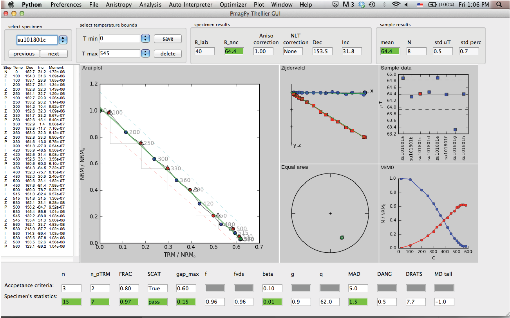
Under the Windows operating system, you can find your command line by searching for the “Command Prompt” application.

Note that the location of this program varies on different computers, so you may have to hunt around a little to find yours. Also, the actual “prompt” will vary for different machines.
When you first open a terminal window, you are in your “home” directory. Fundamental to all operating systems is the concept of directories and files. On windows-based operating systems (MacOS or Windows), directories are depicted as “folders” and moving about is accomplished by clicking on the different icons. In the world of terminal windows, the directories have names and are arranged in a hierarchical sequence with the top directory being the “root” directory, known as “/” (or C:\ in Windows) and the file system looks something like this:

Within the root directory, there are subdirectories (e.g. Applications and Users in bold face). In any directory, there can also be “files” (e.g. dir_cart_example.dat). To refer to directories, the operating system relies on what is called a “pathname”. Every object has an “absolute” pathname which is valid from anywhere on the computer. The absolute pathname in *NIX always begins from the root directory / and in DOS (the operating system working in the Windows command line window), it is C:\.
The absolute pathname to the home directory lisa in the figure is /Users/lisa. Similarly, the absolute pathname to the directory containing PmagPy scripts would be /Users/lisa/PmagPy. There is also a “relative” pathname, which is in reference to the current directory (the one you are ‘sitting’ in). If user “lisa” is sitting in her home directory, the relative pathname for the file dir_cart_example.dat in the directory data_files would be data_files/dir_cart/dir_cart_example.dat. When using relative pathnames, it is useful to remember that ./ refers to the current directory and ../ refers to the directory “above”. Also, lisa’s home directory would be ~lisa, or if you are logged in as lisa yourself, then it is just ~.
Now that you have found your command line and are comfortable in your home directory, you can view the contents of your directory with the Unix command ls or the DOS command dir. You can make a new directory with the command
This command works in both Unix and DOS environments) and you can move into your new directory with the command
To move back up into the home directory, just type cd .. remembering that .. refers to the directory above. Also, cd by itself will transport you home from where ever you are (there’s no place like home....). You can also change to any arbitrary directory by specifying the full path of the destination directory.
Programs that operate at the command line level print output to the screen and read input from the keyboard. This is known as “standard input and output” or “standard I/O”. One of the nicest things about working at the command line level is the ability to redirect input and output. For example, instead of typing input to a program with the keyboard, it can be read from a file using the symbol <. Output can either be printed to the screen (standard output), redirected into a file using the symbol >, appended to the end of a file with >> or used as input to another program with the pipe operator (|).
There are many ways of editing text and the subject is beyond the scope of this documentation. Text editing is a blessing and a curse. You either love it or hate it and in the beginning, and if you are used to programs like Word, you will certainly hate it. (And if you are used to a decent text editor, you will hate Word!). But you can’t use Word because the output is in a weird format that no scripting languages read easily. So you have to use text editor that will produce a plain (ascii) file, like Notepad, TextWrangler, Sublime Text or Atom. TextWrangler is free software available for Macs, Notepad comes standard in the Windows operating system and the Atom text editor is a free cross-platform option with lots of nice packages available that extend its functionality.
To get started, you will need to install Python. Then, download git and follow the install instructions. If you don’t know whether you have git installed, just type git on your command line and see if the help message appears.
This will open a browser window with a list of Notebooks. Click on Lecture 1, which overviews the course and teaches you how to run Notebooks. From there, you can follow the lectures in order or pick and choose based on your interests. Python is a lot of fun - enjoy!
NB: For Anaconda-specific information, see this a handy cheat sheet with information about how to install and update Python packages, as well as create custom Python environments and more.
To show some of what is possible in terms of data analysis using PmagPy in a notebook environment, we have created example notebooks that are available for download from this repository: https://github.com/PmagPy/2016_Tauxe-et-al_PmagPy_Notebooks. These notebooks can also be viewed as static webpages here: http://pmagpy.github.io/Example_PmagPy_Notebook.html and http://pmagpy.github.io/Additional_PmagPy_Examples.html.
The main example notebook (Example_PmagPy_Notebook.ipynb) combines data from two different studies for the sake of developing a mean paleomagnetic pole from the upper portion of a sequence of volcanics in the North American Midcontinent Rift (Halls, 1974; Swanson-Hysell et al., 2014). The two data files used within the notebook can be downloaded from the MagIC database. The digital object identifier (doi) search option allows for the data files to be readily located as https://earthref.org/MagIC/doi/10.1139/e74-113/ and https://earthref.org/MagIC/doi/10.1002/2013GC005180/. Downloading these data files from the database and putting them into folders within a local ‘Project Directory’ allows them to be accessed within the Jupyter notebook.
Within the example notebook, these data are unpacked into their respective MagIC formatted tab delimited data files. The data are then loaded into dataframes and filtered using several different criteria (stratigraphic height and polarity). Several functions from the ipmag module are used for making equal area projections and calculating statistics. In addition to combining the data sets to calculate the mean pole, the code in the notebook conducts a bootstrap fold test on the data using the approach of Tauxe & Watson (1994) as well as a common mean test. The data recombinations and calculations done in this notebook are examples of portions of the data analysis workflow which are often difficult to document and reproduce. The examples illustrate a small sliver of the potential for the use of notebooks for data manipulation and analysis of paleomagnetic data. Additional functionality available within PmagPy is demonstrated within the additional PmagPy examples notebook (Additional_PmagPy_Examples.ipynb) as small vignettes of example code. Functions related to paleomagnetic and rock magnetic data analysis are shown as examples. The notebook also illustrates some of the interactivity that can be built into the notebook utilizing IPython widgets.
If you want to to run the example notebook interactively, you’ll need to follow these steps:
This will open up a local IPython server in your default web browser. Click on Example_PmagPy_notebook.ipynb to open and edit the main example notebook. You will see something like this:

Notebooks are constructed as a series of ‘cells’ which can be text or code. To view the ‘source’ of a text cell, just click on it. To render it, click on the ‘run’ button (sideways triangle on the toolbar). Similarly, to run the code in a code cell, click on the cell and then the ‘run’ button (or use the shift+enter short cut). To execute the entire notebook, click on the ‘Cell’ button and choose ’Run All’.
Now you are ready to look at some data. In the code block under the heading ‘Reading data from MagIC format results files’, data are read in from a file downloaded and unpacked from the MagIC database. The notebook shows how to read in the data into a pandas DataFrame, and plot the directions on an equal area projection:
There are several other tricks shown off in the notebook, which should be enough to get you started using ipmag in a Python notebook environment. Conducting data analysis using PmagPy in a notebook allows for the underlying code of statistical tests to be available and for the decisions made in the specific implementation of such tests to be transparently presented.
Although there is much much more to do in Python, this documentation is aimed at getting and using PmagPy, so that’s it for this chapter. Congratulations if you made it to the end!
First, please test that you have successfully installed the correct Python distribution.
Find your command line (Terminal for Mac users, Command Prompt for Windows users) and type python. You should see something like this:
If you get an error message, or you don’t see “Anaconda” in the initial message, you should go back to the installing Python section and follow the instructions there.
If you only have the core packages installed with the Anaconda distribution (plus the PmagPy package you just installed), you may get the following ImportError when attempting to execute “eqarea.py -h”:
To correct this error, simply execute at the command line:
If you installed with pip but you have this error message or similar when you try to run a program:
Make sure you are running the correct command for your operating system and PmagPy install.
Once you have the correct command, if you still see that error message, this probably means that you have not correctly installed PmagPy. On your command line, try:
You should see both pmagpy-(version_number) and pmagpy-cli-(version_number) on that list. If you don’t see them, go ahead and reinstall:
Fully uninstalling and reinstalling can occasionally fix other problems as well!
For more information on the developer install, you can run:
You can also check the specific install instructions.
For Mac users with a developer install, it is possible that you need to make the python scripts executable. On the command line in the PmagPy/programs directory, run the command: chmod a+x *.py
If you are trying to get a developer install to work on Windows, and you want to set/check your $PATH manually, see Setting your Path in Windows. More information about adding PmagPy to your $PATH is available here.
You can test if your PATH has been properly set with this command:
If you don’t see PmagPy, PmagPy/programs, and PmagPy/programs/conversion_scripts somewhere in the output, you have not successfully completed a developer install.
If for some reason you need to add PmagPy to your $PATH manually, you can find more general information about setting $PATH here, and specific information about adding PmagPy to your $PATH here.
If your computer uses multiple languages, or a language other than English, you may get an error message like this:
Mac users can fix this by opening your .bashrc file and adding these lines:
Some of the modules used in PmagPy have dependencies that are not called directly. If you are missing one of those dependencies, the programs may fail in odd ways. In general, it is worthwhile to open Canopy, go into the package manager, and update all packages. More specifically, if you see an error message like this:
you may be missing the MKL package. Open Canopy, go to package manager, and select “Available packages”. Scroll down to MKL, and install it. This should fix the problem! Note that windows users who are having trouble opening one of the GUIs should try this solution whether or not they actually see this error message.
PmagPy depends on a variety of Python packages. Sometimes you will run into problems if you have the wrong version of a dependency. You may get an ImportError or a SyntaxError in these cases. You can check the list of correct dependencies on Github.
You can see what package versions you are running by using the command “conda list” (or “pip list” if you have a non-Anaconda Python). You can then compare with our list, and upgrade or downgrade if necessary. For example: “conda install pandas=0.23.4”.
NB: This should no longer be a problem with matplotlib 2.0 and higher.
If your jupyter notebook is calling the wrong version of python (i.e., using the OSX verion of python instead of Anaconda python), do this:
and this:
where USERNAME is your username.
In the past, PmagPy used Basemap for all map plotting functionality. Basemap is no longer being developed, so we have switched to cartopy. We highly recommend that any newcomers simply follow the regular install instructions which include installing cartopy. However, if you need to use Basemap, you can still install it:
Then install the high-res data files:
By default, all pmagplotlib/ipmag functions will now use cartopy. If you need the old Basemap version, the following functions have been preserved:
To use the most up-to-date Basemap, you will need to run it in a conda env. Otherwise, you will get a KeyError and/or a FileNotFoundError. This article explains how to create and run a conda env.
All that is to say: you *can* still use Basemap, but please just use cartopy instead.
Report a problem not listed above on Github, or e-mail ltauxe@ucsd.edu. Please include the following information: 1) the version of PmagPy that you are using, 2) your operating system, 3) any error messages that you got, 4) the datafile that is giving trouble, if relevant.
Halls, H.C. (1974). A paleomagnetic reversal in the Osler volcanic group, Northern Lake Superior. Can. J. Earth Sci., 11, (pp.1200-1207).
Paterson, G., Tauxe, L., Biggin, A., Shaar, R., & Jonestrask, L. (2014). On improving the selection of thellier-type paleointensity data. Geochem. Geophys. Geosys., 15.
Prez, F. & Granger, B. (2007). IPython: a system for interactive scientific computing. Computing in Science and Engineering, 9, 21–29.
Shaar, R., Ron, H., Tauxe, L., Kessel, R., Agnon, A., Ben Yosef, E., & Feinberg, J. (2010). Testing the accuracy of absolute intensity estimates of the ancient geomagnetic field using copper slag material. Earth and Planetary Science Letters, 290, 201–213.
Shaar, R. & Tauxe, L. (2013). Thellier_gui: An integrated tool for analyzing paleointensity data from thellier-type experiments. Geochem. Geophys. Geosys., 14.
Swanson-Hysell, N. L., A. A. Vaughan, M. R. Mustain, and K. E. Asp, Confirmation of progressive plate motion during the Midcontinent Rift’s early magmatic stage from the Osler Volcanic Group, Ontario, Canada. Geochem., Geophys., Geosyst., 15, 2039–2047, 2014.
Tauxe, L. (1998). Paleomagnetic Principles and Practice. Dordrecht: Kluwer Academic Publishers.
Tauxe, L., Banerjee, S. K., Butler, R., & van der Voo, R. (2010). Essentials of Paleomagnetism. Berkeley: University of California Press.
Tauxe, L., Bertram, H., & Seberino, C. (2002). Physical interpretation of hysteresis loops: Micromagnetic modelling of fine particle magnetite. Geochem., Geophys., Geosyst., 3, DOI 10.1029/ 2001GC000280.
Tauxe, L., Constable, C., Johnson, C., Miller, W., & Staudigel, H. (2003). Paleomagnetism of the southwestern u.s.a. recorded by 0-5 ma igneous rocks. Geochem., Geophys., Geosyst., (pp. DOI 10.1029/2002GC000343).
Tauxe, L., Luskin, C., Selkin, P., Gans, P. B., & Calvert, A. (2004). Paleomagnetic results from the snake river plain: Contribution to the global time averaged field database. Geochem., Geophys., Geosyst., Q08H13, doi:10.1029/2003GC000661.
Tauxe, L. & Staudigel, H. (2004). Strength of the geomagnetic field in the cretaceous normal superchron: New data from submarine basaltic glass of the troodos ophiolite. Geochem. Geophys. Geosyst., 5(2), Q02H06, doi:10.1029/2003GC000635.
Tauxe, L. & Watson, G. S. (1994). The fold test: an eigen analysis approach. Earth Planet. Sci. Lett., 122, 331–341.